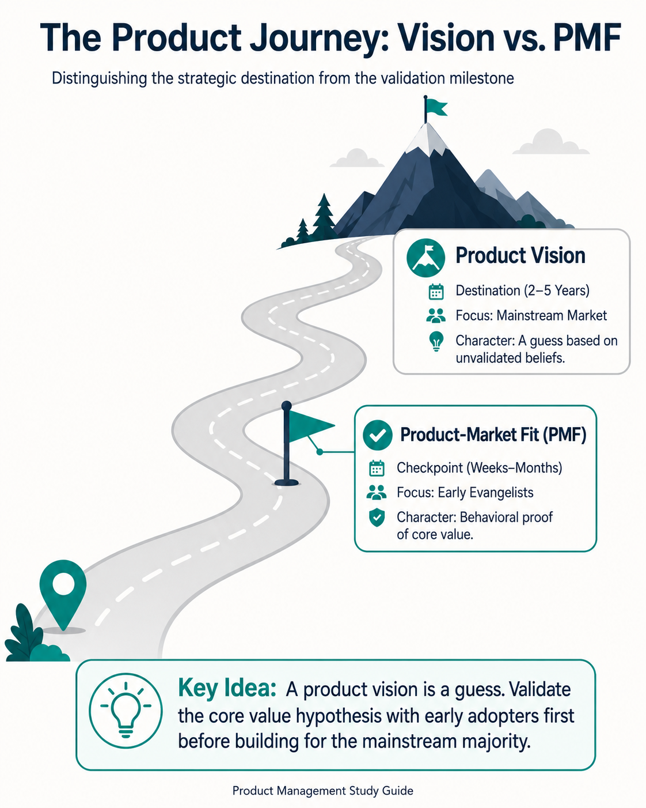
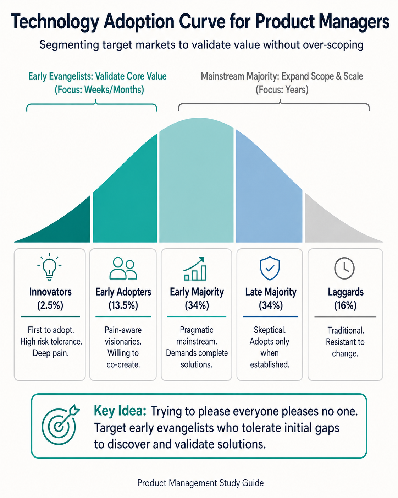
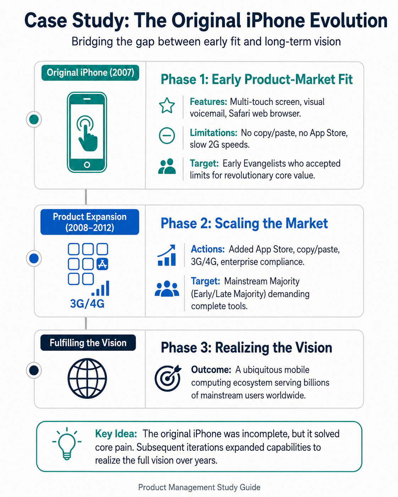
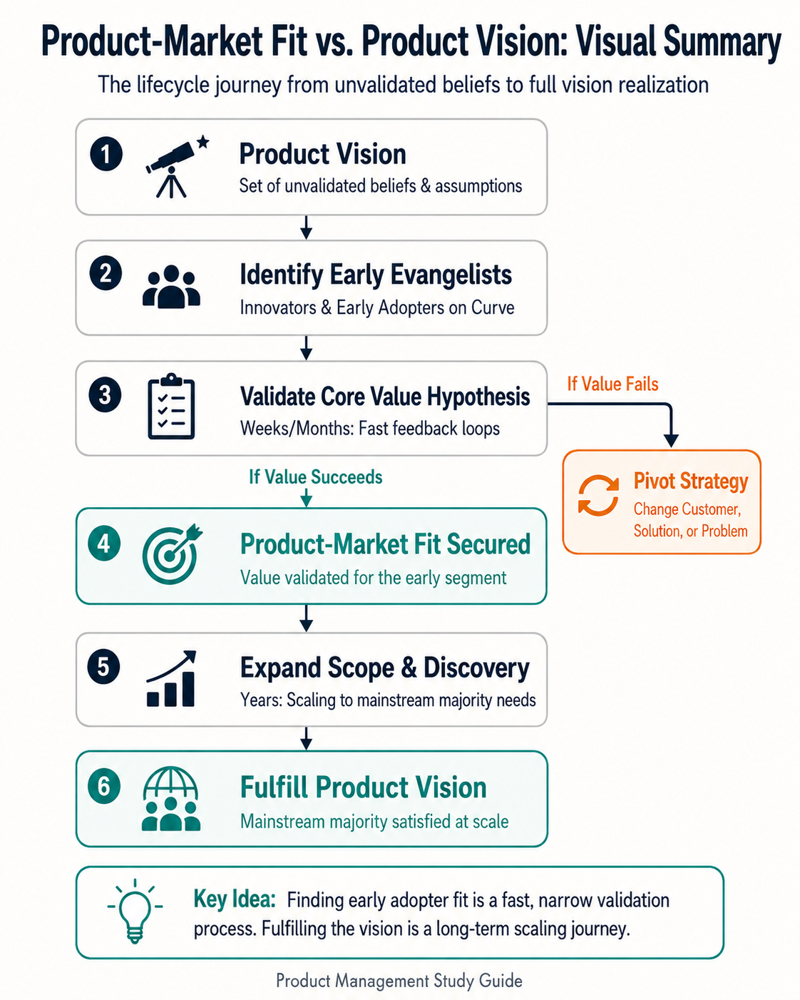

Your goal
Distinguish between a product vision and product-market fit, and explain how a product team uses early evangelists to validate value hypotheses before expanding to the mainstream market.
Lecture overview
Before starting any product development journey, you must establish a clear destination. This lecture examines the relationship between where your product wants to go (the product vision) and the validation steps required to get there (product-market fit).
Central argument
A product vision is a long-term destination, but for new products or major initiatives, it is initially an unvalidated guess composed of beliefs. To avoid the trap of trying to please everyone and pleasing no one, product managers must validate these beliefs by first securing product-market fit with a narrow set of highly motivated early evangelists. This initial validation takes weeks or months, whereas developing the product to meet broader mainstream needs and realize the full product vision takes years.
1. The Role of a Product Vision
A product vision describes the future that a product team is trying to create. It defines the type of services you plan to provide and the types of customers you intend to serve. The vision serves as the product’s final destination. Having this destination in mind is critical: if you don't know where you are going, you have little chance of getting there.
Timeframes for Vision Planning
The strategic horizon of a product vision depends on the nature of the industry and its development cycles:
- Software and Service-Centric Companies: Typically plan over a two-to-five-year timeframe.
- Hardware or Device-Centric Companies: Typically plan over a five-to-ten-year timeframe due to longer manufacturing lead times, supply chains, and physical engineering cycles.
The Vision as an Organizational Tool
A compelling and clear product vision is one of a Product Manager’s most effective leadership tools. Strong technology professionals are drawn to inspiring visions because they want to work on something meaningful. It serves to motivate and unite the team, providing a clear answer to why their daily work matters.
2. The Product Vision as a Validated Guess
While a product vision must be inspiring, product managers working on a new product must acknowledge that their vision is initially a guess. A product vision is built on a set of unvalidated beliefs: what customers will find valuable, and what business model can eventually sustain the company. To build a successful product, the team must get these beliefs out on the table and systematically validate them.
Validation Stages
- Product-Market Fit (PMF): Used when validating a new product idea. It verifies whether the core value hypothesis matches the needs of a target customer segment.
- Opportunity-Market Fit: Used when planning a major new initiative or feature set for an existing product.

18-vision-vs-pmf.png
Compares a 2-5 year destination guess with short-term early adopter validation.
3. The Technology Adoption Curve and Early Evangelists
A common mistake made by teams seeking product-market fit is failing to focus on a specific customer. A foundational lesson in Product Management is: trying to please everyone at once will almost certainly please no one. To avoid this trap, teams must understand the Technology Adoption Curve, which describes how different groups approach new innovations.
The Curve Segments
- Innovators: The very first group willing to try a new product. They have a high tolerance for risk and are willing to take chances either because they feel the pain point acutely or because they enjoy trying new, unproven technologies that might fail.
- Early Adopters: The second wave of users who adopt innovations early. Together with innovators, these users form the target group of early evangelists.
- Early Majority: The start of the mainstream market, requiring more polished, comprehensive solutions.
- Late Majority: Mainstream users who adopt the technology only after it has become highly established.
- Laggards: The final group to adopt, typically resistant to change.
The Role of Early Evangelists
When validating a value hypothesis, the PM's goal is to find a set of potential customers who believe in the vision and are willing to collaborate to discover a solution. These early evangelists are highly motivated and pain-aware. Product teams must establish a clear boundary for what they expect from these customers:
- What to expect: A willingness to try an incomplete, limited product, tolerate early bugs, and help test whether the core solution solves their problem.
- What NOT to expect: Teams should never expect customers to design or give them the solution. The product team remains responsible for defining the solution based on customer testing.
During this stage, the team must remain highly open to learning. If early testing shows that the core value hypotheses are not reflected in customer behavior, the team must pivot—either targeting different customers, developing different solutions, or addressing entirely different problems.

18-technology-adoption-curve.png
Shows the Technology Adoption Curve segments and target early validation focus.
4. Bridging the Gap: From Early Fit to Long-Term Vision
Achieving product-market fit with early adopters is not the end of the product journey; it is the beginning. There is a major difference between serving early evangelists and serving the mainstream majority. Early Evangelists are small in number, highly motivated, and willing to accept a product with significant feature gaps if it addresses their core pain. The Mainstream Majority represents a much broader market with lower risk tolerance and expects a complete, polished product.
To move from early adopters to the mainstream majority, product teams must continuously develop the product by expanding customer scope to include user profiles with lower risk tolerance, and running product discovery activities to identify and design solutions that meet their broader requirements.

18-iphone-evolution-case-study.png
Timeline showing original limited iPhone finding early PMF and iterating to mainstream success.
Comparison: Vision vs. PMF
| Dimension | Product Vision | Product-Market Fit (PMF) |
|---|---|---|
| Definition | The long-term aspirational destination of the product. | The alignment of a validated solution with an active target customer group. |
| Timeframe | 2–5 years (software) / 5–10 years (hardware). | Weeks to months (initial validation). |
| Nature | A guess composed of strategic beliefs. | A proven alignment backed by customer behavior. |
| Audience Focus | The broad mainstream market. | A narrow group of early evangelists (innovators/early adopters). |
| Primary Goal | Inspire, recruit, motivate, and direct the team. | Validate value hypotheses and ensure willingness to buy. |
Practical Product Management example
Situation
A PM at a startup is designing an AI-powered candidate assessment platform designed to automate resume screening and interview grading. The ultimate product vision is to serve massive enterprise corporations (5,000+ employees), which requires advanced role-based access control, complex enterprise integrations (ATS/HRIS), and SOC 2 security compliance. Building these features immediately would require two years of development without validation.
Decision
The PM decides to narrow the initial target market to early-stage technology startups (10–50 employees) that are hiring rapidly. The PM launches a simple web app containing only the core AI screening tool. It lacks custom roles, ATS integrations, and SOC 2 certification.
Reasoning
The PM identifies rapidly hiring startups as early evangelists. They feel the pain of resume overload acutely and have a high tolerance for security and integration gaps in exchange for a tool that immediately saves them hours of manual review. They are willing to work with the team to test the AI's accuracy, whereas enterprise buyers would immediately reject it.
Consequence
Within two months, the team signs 15 startup customers who actively use the tool, validating the core AI value hypothesis and securing early product-market fit. With this validated base, they spend the next two years adding compliance and integrations to successfully move upstream and fulfill their long-term vision.
Transferable lesson
Secure product-market fit by validating your core value hypothesis with highly motivated, risk-tolerant early adopters before investing heavy resources into the scaling requirements of the mainstream market.
Common misunderstandings
"The product vision is an execution roadmap"
The product vision is not a detailed project plan. It is a strategic destination based on beliefs. Treating the vision as a fixed roadmap leads to building features without validating if customers actually want them.
Decision consequence: Instead of executing the vision blindly, the PM prioritizes validating underlying assumptions through discovery.
"Product-market fit means satisfying the entire target market at launch"
Trying to satisfy the entire market from day one causes teams to build too many features, diluting focus and depleting resources. You must find fit with early adopters first. They will tolerate gaps (like the original iPhone missing copy/paste) as long as you solve their primary pain.
Decision consequence: The PM scopes the initial launch tightly around the core value hook, ignoring mainstream request noise.
"Early adopters will provide the product solution"
Early adopters are valuable for identifying pain and testing your product, but they cannot design the solution for you. As the PM, you must extract their underlying problems and design a solution that is technically feasible and business-viable.
Decision consequence: The PM uses customer sessions to observe behavior and validate hypotheses rather than copying feature feature requests verbatim.
Key concepts and definitions
- Product Vision
- The long-term destination (2-5 years for software, 5-10 years for hardware) defining the services to provide and customers to serve.
- Product-Market Fit (PMF)
- The alignment of a validated solution with a specific customer group who find enough value in it to buy or adopt it.
- Opportunity-Market Fit
- The validation of a major new initiative or feature set within an existing product.
- Early Evangelist
- An early adopter or innovator who feels a pain point deeply enough to tolerate initial product limitations and collaborate on discovering a solution.
- Technology Adoption Curve
- A sociological model describing how different user groups (Innovators, Early Adopters, Early Majority, Late Majority, Laggards) adopt new innovations over time.
PM Strategy Simulator: Scoping for PMF
Simulation Phase 1: Target Audience Selection
You are the PM at a startup building an AI-powered candidate screening platform. Your ultimate vision is to serve Fortune 500 enterprise companies. Which group should you target for your first release?
Simulation Phase 2: Initial Feature Scoping
Now that you've selected tech startups as your early adopters, they tell you they need resume screening but also request single sign-on (SSO) and ATS integrations to fit their current workflow. What do you build for the initial MVP?
Simulation Phase 3: Realizing the Vision
By launching the core AI screening tool to tech startups, you validated the value hypothesis in 2 months. You signed 15 early startup customers, received direct feedback to refine the AI model, and generated early revenue. Now, you can use these validated results to secure resources, build integrations and security compliance, and begin signing enterprise clients—realizing your product vision step-by-step.
Transferable Lesson: Start with early evangelists (high pain, high risk tolerance) to validate core value in weeks or months, then expand capabilities iteratively over years to fulfill your product vision.
Identify the Customer Profile
A prospect gives you the following feedback during discovery:
"We are hiring 10 people a month and our founders are spending all weekend reading resumes. This tool looks raw, but if the AI can help us filter the top 20% of applicants, we'll start using it today and give you feedback every week."
Which segment of the Technology Adoption Curve does this prospect represent?
Key takeaways
- A product vision defines the future destination, including services provided and target customers.
- Software product visions look out 2–5 years, while hardware visions extend 5–10 years due to physical manufacturing constraints.
- Strong technology professionals are highly motivated by inspiring visions that offer meaningful work.
- At launch, a product vision is a guess based on unvalidated beliefs about customer value and business sustainability.
- Opportunity-market fit is the validation process used for major initiatives on existing products, parallel to product-market fit for new products.
- Trying to please everyone at once pleases no one; teams must focus on a narrow target segment first.
- Early evangelists are composed of innovators and early adopters on the Technology Adoption Curve.
- Innovators and early adopters have high risk tolerance because they experience the core pain point deeply or have high tolerance for failure.
- We do not expect early adopters to give us the solution; we use their feedback to test whether our designed solution works for them.
- The transition from early fit to mainstream majority requires continuous product discovery and scope expansion, taking years to achieve.
Visual summary

18-visual-summary.png
Process flowchart mapping the transition from early adopter PMF validation to mainstream majority scaling.
The diagram represents the temporal and audience difference in the product lifecycle. Validation starts within weeks or months by matching unvalidated beliefs in the Product Vision with early adopters to secure initial Product-Market Fit. If this fails, the team pivots. Once early PMF is secured, the team enters a multi-year scaling phase where they run discovery and expand scope to reach the Mainstream Market and ultimately realize the full Product Vision.
One-minute review
The Vision is a Destination: A product vision provides a 2–10 year destination to align the team and attract talent, but for new products, it remains a guess based on beliefs. Fit Starts Small: To validate those beliefs, teams must avoid broad targeting and instead secure product-market fit (or opportunity-market fit) with early evangelists (innovators and early adopters) who feel the pain acutely and tolerate early gaps. Discovery Bridges the Gap: While finding initial fit takes weeks or months, scaling the product by expanding scope to meet the demands of the mainstream majority and fulfill the complete product vision takes years.